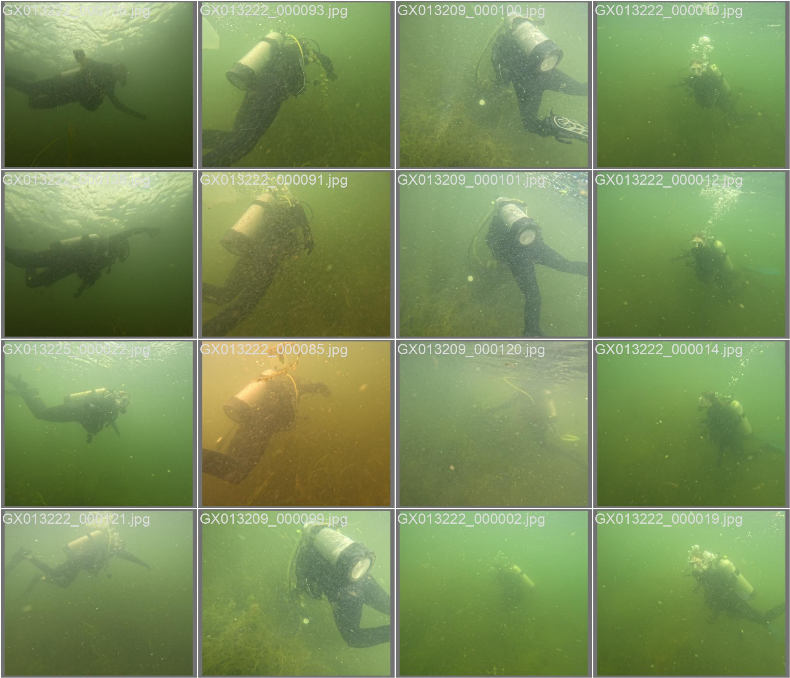
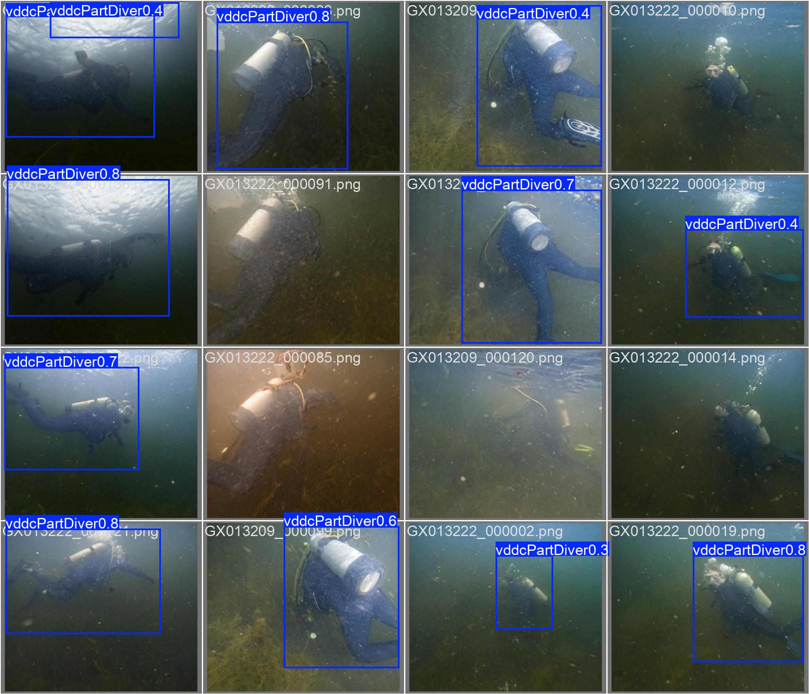

Task-Driven Underwater Image Enhancement
- Working on underwater image restoration for robust downstream robotic tasks such as object detection and SLAM.
- This work is currently in progress for my master's thesis.
mAP50 score increases by 30%–70% when enhancing underwater images with our method.
Original lake images


Enhanced by our method

